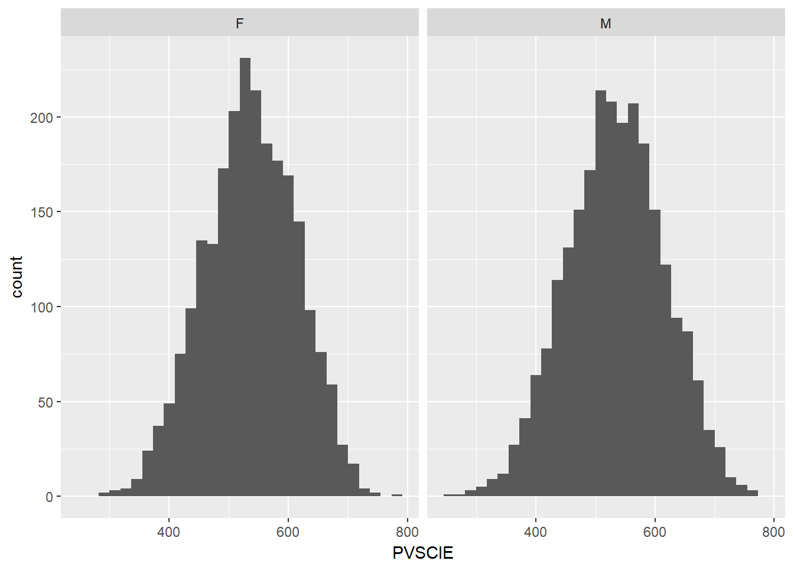

- praktikum: Regressioonanalüüs
Martin Kolnes, Karin Täht
Laadige alla praktikumi andmed.
Kordamine
Kasutage andemstikku nimega “pisa”.
- Vaadake kirjeldavaid statistikuid matemaatik (PV1MATH), lugemise (PV1READ) ja loodusteaduste (PV1SCIE) alatestide tulemuste kohta.
summary(pisa)## X PVMATH PVREAD PVSCIE
## Min. : 1 Min. :217.3 Min. :171.3 Min. :250.8
## 1st Qu.:1193 1st Qu.:467.9 1st Qu.:452.9 1st Qu.:480.8
## Median :2384 Median :517.8 Median :507.8 Median :535.6
## Mean :2384 Mean :518.2 Mean :504.4 Mean :535.0
## 3rd Qu.:3576 3rd Qu.:570.7 3rd Qu.:561.4 3rd Qu.:591.1
## Max. :4768 Max. :747.6 Max. :721.3 Max. :778.1
## GENSCIE INSTSCIE INTSCIE JOYSCIE
## Min. :-3.6618 Min. :-2.1025 Min. :-3.1448 Min. :-2.15170
## 1st Qu.:-0.3580 1st Qu.:-0.4167 1st Qu.:-0.2320 1st Qu.:-0.58250
## Median : 0.0792 Median : 0.0195 Median : 0.2143 Median :-0.10280
## Mean : 0.1521 Mean : 0.0609 Mean : 0.1956 Mean : 0.01382
## 3rd Qu.: 0.8962 3rd Qu.: 0.3719 3rd Qu.: 0.6732 3rd Qu.: 0.53910
## Max. : 2.1867 Max. : 1.8212 Max. : 3.2888 Max. : 2.05620
## PERSCIE SCIEEFF SCIEFUT SCSCIE
## Min. :-3.0797 Min. :-3.76820 Min. :-1.41860 Min. :-2.3632
## 1st Qu.:-0.5345 1st Qu.:-0.56540 1st Qu.:-0.69380 1st Qu.:-0.3218
## Median : 0.0553 Median :-0.05300 Median :-0.04920 Median : 0.0752
## Mean : 0.1460 Mean : 0.04218 Mean :-0.08318 Mean : 0.1147
## 3rd Qu.: 0.7259 3rd Qu.: 0.51790 3rd Qu.: 0.58830 3rd Qu.: 0.6520
## Max. : 2.5264 Max. : 3.22300 Max. : 2.27140 Max. : 2.2442
## GR GENDER
## Min. : 7.000 F:2352
## 1st Qu.: 8.000 M:2416
## Median : 9.000
## Mean : 8.725
## 3rd Qu.: 9.000
## Max. :10.000- Tehke eraldi histogrammid soo alusel loodusteaduste testi tulemuste kohta.
library(ggplot2)
ggplot(data=pisa, aes(x= PVSCIE))+
geom_histogram()+
facet_wrap(~GENDER)## `stat_bin()` using `bins = 30`. Pick better value with `binwidth`. 3. Missugused on korrelatsioonid nende kolme testi (PV1MATH, PV1READ, PV1SCIE) vahel?
library("psych")
corr.test()#argumendiks saate panna mitu veergulibrary(psych)##
## Attaching package: 'psych'## The following objects are masked from 'package:ggplot2':
##
## %+%, alphacorr.test(pisa[,c("PVMATH", "PVREAD", "PVSCIE")])## Call:corr.test(x = pisa[, c("PVMATH", "PVREAD", "PVSCIE")])
## Correlation matrix
## PVMATH PVREAD PVSCIE
## PVMATH 1.00 0.84 0.92
## PVREAD 0.84 1.00 0.86
## PVSCIE 0.92 0.86 1.00
## Sample Size
## [1] 4768
## Probability values (Entries above the diagonal are adjusted for multiple tests.)
## PVMATH PVREAD PVSCIE
## PVMATH 0 0 0
## PVREAD 0 0 0
## PVSCIE 0 0 0
##
## To see confidence intervals of the correlations, print with the short=FALSE optionRegressioonanalüüs on üks kõige sagedamini kasutatavaid statistilisi meetodeid. Selle eesmärgiks on tuletada valem, mis seostab omavahel sõltuva muutuja ja ühe või mitu sõltumatut muutujat ehk prediktorit. Tuletatud valemit võib kasutada sõltuva muutuja väärtuste ennustamiseks prediktorite väärtuste põhjal. Aga enamasti kasutatakse seda määramaks kindlaks, kas ja millised sõltumatud muutujad omavad olulist seost sõltumatu muutujaga. Oletame, et oleme inimeste kohta mõõtnud kahte näitajat, nimetagem neid X ja Y. Me tahame ennustada Y väärtusi (sõltuv muutuja) X-i väärtuste kaudu (sõltumatu muutuja). Sellisel juhul saame nendevahelise regressioonseose valemi kirjutada nii: \[Y = b_{0} + b_{1}X + e\]
Y ja X tähistavad selles vastavalt inimeste sõltuva ja sõltumatu tunnuse väärtusi. \(b_0\) on vabaliige, mis ütleb, milline on sõltuva muutuja Y väärtus, kui sõltumatu muutuja X väärtus on 0. \(b_1\) on regressioonikordaja, mis ütleb, kui palju muutub sõltuv muutuja Y juhul kui sõltumatu muutuja X väärtus muutub ühe ühiku võrra. \(b_0\) ja \(b_1\) nimetame mudeli parameetriteks, need on inimeste jaoks ühised. \(e\) on mudeli viga (nimetatakse ka jääkideks või hälveteks). Mudel ei suuda reeglina andmeid seletada täielikult ja \(e\) ongi mudeli ja tegelike andmete vaheline erinevus mingi konkreetse inimese puhul. Regressioonianalüüsi puhul anname statistikaprogrammile ette inimeste X ja Y väärtuse ning saame tagasi b-de väärtuse ja iga inimese kohta ka \(e\) väärtuse. Kui oleme mõõtnud kolme muutujat (nimetagem neid Y , X1 ja X2) ja tahame teada kas X1 ja X2 mõlemad mõjutavad Y -it, omandaks valem sellise kuju: \[Y = b_{0} + b_{1}X_{1} + b_{2}X_{2} + e\]
Ehk siis üks bX korrutis on valemisse juurde tulnud ja sellest tulenevalt on vaja kindlaks määrata väärtus ühe täiendava \(b\) jaoks. üldistatult võibki öelda, et iga täiendav sõltumatu muutuja lisab valemisse veel ühe \(bX\) korrutise ja kindlaks määramist vajab üks täiendav parameeter.
Paarisregressioon
Avage andmefail pisa.
Teeme alustuseks lihtsa regressioonanalüüsi mudeli, milles on sõltuv tunnus ja ainult üks sõltumatu tunnus ehk prediktor. Võtame sõltuvaks tunnuseks PISA uuringu loodusteaduste alatesti skoori (tunnus nimega PVSCIE) ja ennustame seda matemaatika alatesti skoori kaudu (tunnus nimega PVMATH).
Eeldus - lineaarne seose kuju sõltuva ja sõltumatute tunnuste vahel
Teeme kõigepealt tavalise hajuvusdiagrammi, et hinnata muutujate vahelise seose olemust. Siin tahame näha lineaarset seost sõltuva ja sõltumatute tunnuste vahel. Antud juhul on meil muutujad tugevalt seotud ja näeme joonise selget lineaarset seost.
plot(x = pisa$PVMATH, y = pisa$PVSCIE)Mudeli koostamine
Mudeli koostamiseks kasutame R-i funktsiooni lm (linear model), millele anname mudelisse minevad muutujad valemi kujul ja argumendi data abil andmetabeli nime, millest muutujad võetakse. Funktsiooni lm() kasutamine:
lm(sõltuv tunnus \(\sim\) sõltumatu tunnus, data=andmestiku nimi)
pisa.mudel1 <- lm(PVSCIE ~ PVMATH, data=pisa)Salvestasime mudeli nimega pisa.mudel1. Selle nime abil saame hiljem kätte meid huvitavad mudeli parameetrid ja ka mudeli jäägid. Kui mudelisse kaasatud muutujates esineb puuduvaid andmeid, tuleb nende välja jätmiseks lisada funktsioonile lm veel täiendav argument na.action=na.omit. Nüüd kui oleme mudeli defineerinud, vaatame mudeli väljundit, mille saame kätte funktsiooni summary abil:
summary(pisa.mudel1)##
## Call:
## lm(formula = PVSCIE ~ PVMATH, data = pisa)
##
## Residuals:
## Min 1Q Median 3Q Max
## -130.546 -21.008 -0.288 20.401 133.671
##
## Coefficients:
## Estimate Std. Error t value Pr(>|t|)
## (Intercept) 29.203022 3.194110 9.143 <2e-16 ***
## PVMATH 0.976174 0.006101 160.013 <2e-16 ***
## ---
## Signif. codes: 0 '***' 0.001 '**' 0.01 '*' 0.05 '.' 0.1 ' ' 1
##
## Residual standard error: 31.56 on 4766 degrees of freedom
## Multiple R-squared: 0.8431, Adjusted R-squared: 0.843
## F-statistic: 2.56e+04 on 1 and 4766 DF, p-value: < 2.2e-16Mida mudeli väljundi osad tähendavad? Kuna seda tüüpi väljund on antud praktikumis üks kõige olulisemaid, siis vaatame selle üksikasjalikumalt läbi. Hakkame väljundi ülaosast pihta ja liigume järjest allapoole. Tuleb rõhutada, et tegemist pole väljundi osade tähtsuse järjekorraga.
Esimene osa Call lihtsalt kordab üle, millised muutujad on mudelisse kaasatud.
Residuals toob ära mõned näitajad mudeli jääkide kohta. Mudeli jäägid kujutavad endast erinevust andmete ja mudeli vahel. Tegemist on selle osaga andmetest, mida mudel ära seletada ei suuda. Teatavasti peaksid regressioonimudeli jäägid olema normaaljaotusega ja mediaan peaks olema 0-i ligiduses. See tähendab, et 1. kvartiil (1Q) ja 3. kvartiil (3Q) peaksid olema vastasmärgilised aga absoluutväärtuselt sarnased. Samamoodi ka Min ja Max, kuigi nende puhul on suuremad erinevused üsna tavalised. Kui erinevused on väga suured, võib tekkida probleeme mudeli üldistamisel teistele valimitele. Jääke vaatame hiljem lähemalt, see rida siin võimaldab ainult kiirpilku.
Tabelis Coefficients on kirjas mudeli parameetrid koos nende statistilise usaldusväärsuse näitajatega. Esimesel real (Intercept) tulbas Estimate on toodud mudeli vabaliikme väärtus (antud juhul 29.203). Seda võib tõlgendada nii, et kui sõltumatu muutuja väärtuseks on 0, siis mudel ennustab loodusteaduste alatesti skooriks just selle numbri. Teisel real tulbas Estimate on toodud sõltumatu tunnuse PVMATH (matemaatika alatesti tulemus) regressioonikordaja, mille väärtuseks on 0.976. See tähendab, et kui sõltumatu tunnus muutub ühe ühiku võrra, muutub sõltuv tunnus 0.976 ühiku võrra. Antud juhul on kordaja positiivne, mis tähendab, et kui sõltumatu muutuja suureneb, kasvab ka sõltuv muutuja. Negatiivne kordaja tähendab, et sõltumatu muutuja suurenedes sõltuv muutuja hoopis väheneb. Kui prediktor omab olulist seost sõltuva muutujaga, peaks kordaja olema nullist erinev. Tulbas Std. Error on toodud regressioonikordaja standardviga. Standardviga näitab, kui erinevad oleksid antud regressioonikordaja väärtused erinevates valimites. Väike standardviga tähendab, et ka teistes valimites võib oodata antud valimi omale sarnast kordajat. Tulbas t-value on toodud t-väärtus mis kujutab, endast regressioonikordaja ja standardvea suhet. Olulist seost omavate prediktorite puhul peaks regressioonikordaja olema standardveaga võrreldes võimalikult suur. Laias laastus võib öelda, et vähemalt 2 korda suurem ehk siis t > 2. (Sellest järeldub ka, et väikese standardvea korral võib ka väike reg.kordaja olla oluline). Tulbas Pr(>|t|) on toodud p-väärtus, mis kontrollib hüpoteesi, et t väärtus pole 0-st oluliselt erinev. Antud juhul tähistab *** lõpus, et p < 0.001, mis viitab, et tõenäosus, et t pole 0-st erinev on alla 0.1% ehk väga väike ja sellest tulenevalt võib õelda, et sõltumatu tunnus PVMATH (ehk matemaatika alatesti tulemus) omab statistiliselt usaldusväärset seost loodusteaduste alatesti skooriga.
Tabeli järel on selgitus selle kohta, milline tärnide arv tabeliridade lõpus, tähistab millist statistilise olulisuse nivood. Seejärel on toodud näitaja Residual standard error, mis kujutab endast põhimõtteliselt mudeli jääkide standardhälvet, aga üldiselt see meid väga ei huvita.
Multiple R-squared on mudeli determinatsioonikordaja (\(R^2\)), mis näitab, kui suure osa sõltuva tunnuse hajuvusest mudel (mis antud juhul koosneb ainult tunnusest GENSCIE) ära seletab. Praegusel juhul on selle väärtuseks 0.843, korrutades selle 100-ga saame näitaja protsentides ehk siis 84.3% alatesti skooride hajuvusest saab seletada tunnuse PVMATH abil (ja 15.7% hajuvusest tingitud mingitest muudest asjaoludest). Adjusted R-squared näitab, kui suurt \(R^2\)-e võime oodata kui hinnata seost antud valimi asemel terves populatsioonis. See näitaja on alati väiksem, kui Multiple R-squared, aga praegusel juhul (0.843) on erinevus väga väike, mis on suures osas tingitud ka sellest, et meie valim on väga suur.
Viimasel real on ära toodud F-suhe koos oma vabadusastmete ja p-väärtusega. Näitaja kujutab, endast mudeli poolt seletatava hajuvuse ja jääkhajuvuse suhet. Mida suurem on F-suhe seda parem, rea lõpus toodud p-väärtus aitab hinnata F-suhte suurust ja seeläbi mudeli kvaliteeti. Antud juhul on F-suhte p-väärtus < 2.2e-16, see tähendab väiksem kui \(2.2 * 10^-16\) ehk siis tõenäosus, et nii suur F-suhe on saadud ainult tänu juhusele on väga väike.
\(R^2\) ja F-suhe on saadud võrreldes mudelit sellise mudeliga, milles muutujate-vaheline seos puudub (ainult vabaliikmega mudel, vabaliikme väärtuseks võetakse sõltuva muutuja keskmine). Võime järeldada, et meie mudel on parem kui mudel, milles muutujate vaheline seos puudub.
Mudeli väljundist teada saadud parameetrite abil võime loodusteaduste alatesti ja teaduse oluliseks pidamise seost väljendada järgevalt:
\[loodusteaduste alatesti skoor = 29.203 + 0.976 * matemaatika alatesti skoor\]
Eeldus - jäägid peaksid jaotuma normaaljaotuse kohaselt
Regressioonimudeli jäägid olema normaaljaotusega. Selle testimiseks saame kasutada juba eelmisest praktikumist tuttavaid meetodeid.
# Teeme Shapiro-Wilki testi. Kui p-väärtus on alla 0.05, siis ei ole normaaljaotusel vastav.
shapiro.test(pisa.mudel1$residuals)##
## Shapiro-Wilk normality test
##
## data: pisa.mudel1$residuals
## W = 0.99858, p-value = 0.0003098# Illustreerimiseks saame kasutada histogrammi:
hist(pisa.mudel1$residuals)Ülesanded - paarisregressioon
- Tehke paarisregressiooni mudel, mis ennustab loodusteaduse alatesti skoori (tunnus PVSCIE) teaduse nautimise kaudu (JOYSCIE). Kas seos on oluline? Kui suure osa matemaatika testi skooride hajuvusest mudel ära seletab? Mitme punkti võrra muutub matemaatika skoor kui sõltumatu muutuja muutub ühe punkti võrra?
plot(y = pisa$PVSCIE, x = pisa$JOYSCIE) pisa.mudel.yl1 = lm(PVSCIE ~ JOYSCIE, data = pisa)
summary(pisa.mudel.yl1)##
## Call:
## lm(formula = PVSCIE ~ JOYSCIE, data = pisa)
##
## Residuals:
## Min 1Q Median 3Q Max
## -287.656 -51.782 1.224 55.309 239.658
##
## Coefficients:
## Estimate Std. Error t value Pr(>|t|)
## (Intercept) 534.748 1.123 475.99 <2e-16 ***
## JOYSCIE 21.342 1.321 16.16 <2e-16 ***
## ---
## Signif. codes: 0 '***' 0.001 '**' 0.01 '*' 0.05 '.' 0.1 ' ' 1
##
## Residual standard error: 77.56 on 4766 degrees of freedom
## Multiple R-squared: 0.05193, Adjusted R-squared: 0.05173
## F-statistic: 261.1 on 1 and 4766 DF, p-value: < 2.2e-16Mitmene regressioon
Teeme uue regressioonimudeli, milles jääb sõltuva muutujana alles loodusteaduste alatesti skoor (PVSCIE) ja prediktorina teaduse nautimine (GENSCIE). Lisame veel kaks uut prediktorit: huvi teaduse vastu (INTSCIE) ja motivatsioon loodusteaduste õppimiseks (INSTSCIE).
Eeldus - multikollineaarsus
Lisaks paarisregressiooni eeldustele peame vaatama mitmese regressiooni puhul ka prediktorite vahelisi korrelatsioone. Regressioonanalüüsi puhul tahame, et sõltumatud tunnused oleksid võimalikult tugevalt seotud sõltuva tunnusega, kuid samas võimalikult vähe seotud omavahel. Üheks probleemiks, mis esineda võib, on multikollineaarsus ehk olukord, kui mudeli prediktorid on omavahel liiga tugevalt korreleeritud. Probleemse multikollineaarsuse avastamiseks võime vaadata prediktorite-vahelisi korrelatsioone.
library("psych") #soovitan kasutada funktsiooni corr.test, mis asub antud paketis
corr.test(subset(pisa, select = c("PVSCIE", "JOYSCIE","INTSCIE","INSTSCIE")))## Call:corr.test(x = subset(pisa, select = c("PVSCIE", "JOYSCIE", "INTSCIE",
## "INSTSCIE")))
## Correlation matrix
## PVSCIE JOYSCIE INTSCIE INSTSCIE
## PVSCIE 1.00 0.23 0.17 0.03
## JOYSCIE 0.23 1.00 0.55 0.48
## INTSCIE 0.17 0.55 1.00 0.41
## INSTSCIE 0.03 0.48 0.41 1.00
## Sample Size
## [1] 4768
## Probability values (Entries above the diagonal are adjusted for multiple tests.)
## PVSCIE JOYSCIE INTSCIE INSTSCIE
## PVSCIE 0.00 0 0 0.02
## JOYSCIE 0.00 0 0 0.00
## INTSCIE 0.00 0 0 0.00
## INSTSCIE 0.02 0 0 0.00
##
## To see confidence intervals of the correlations, print with the short=FALSE optionMudeli koostamine
Mudeli koostamiseks kasutama sama funktsiooni:
pisa.mudel2 <- lm(PVSCIE ~ JOYSCIE + INTSCIE + INSTSCIE, data=pisa)Nagu näha on mudeli valemi paremal poolel olevad sõltumatud muutujad omavahel eraldatud + märgiga. Vaatame mudeli väljundit, mille saime funktsiooni summary abil.
summary(pisa.mudel2)##
## Call:
## lm(formula = PVSCIE ~ JOYSCIE + INTSCIE + INSTSCIE, data = pisa)
##
## Residuals:
## Min 1Q Median 3Q Max
## -284.848 -51.022 1.409 55.191 234.832
##
## Coefficients:
## Estimate Std. Error t value Pr(>|t|)
## (Intercept) 533.688 1.167 457.175 < 2e-16 ***
## JOYSCIE 22.028 1.662 13.252 < 2e-16 ***
## INTSCIE 8.895 1.833 4.851 1.26e-06 ***
## INSTSCIE -11.315 1.657 -6.828 9.70e-12 ***
## ---
## Signif. codes: 0 '***' 0.001 '**' 0.01 '*' 0.05 '.' 0.1 ' ' 1
##
## Residual standard error: 77.1 on 4764 degrees of freedom
## Multiple R-squared: 0.06357, Adjusted R-squared: 0.06298
## F-statistic: 107.8 on 3 and 4764 DF, p-value: < 2.2e-16Vaatame mudeli üldist sobitusastet näitavat determinatsioonikordajat \(R^2\) (Multiple R-squared) väljundi alaosas. Selle väärtuseks on 0.06357. Korrutades selle 100-ga saame, et mudel seletab ära umbes 6.4% sõltuva muutuja hajuvusest.
Järgmisena uurime tabelis Coefficients tulbas Estimates olevaid mudeli parameetrite väärtusi. Vabaliikme väärtus on 533.688. See tähendab, et kui kõigi kolme prediktori väärtus juhtub olema 0, võime oodata sellist loodusteaduste testi skoori. Kõik kolm prediktorit omavad olulist seost sõltuva muutujaga. Tunnuse JOYSCIE (teaduse nautimine) regressioonikordaja on 22.028. Mitmese regressiooni korral näitavad regressioonikordajad, millisel määral iga prediktor mõjutab sõltuvat muutujat eeldusel, et teised prediktorid samal ajal ei muutu. See tähendab, et kui JOYSCIE suureneb ühe ühiku võrra, võime oodata, et testiskoor suureneb 22.028 ühiku võrra. Seda eeldusel, et kahe ülejäänud prediktori väärtused jäävad samaks. Tunnuse INTSCIE (huvi teaduse vastu) regressioonikordaja on 8.895. Kui see muutuja suureneb ühe punkti võrra, võib eeldada testiskoori 8.9-punktist kasvu (jällegi eeldusel, et ülejäänud sõltumatud muutujad on konstantsed). Tunnuse INSTSCIE (motivatsioon teaduse õppimiseks) regressioonikordaja on mingil põhjusel negatiivne (-11.315). Kui see muutuja suureneb ühe punkti võrra, langeb testiskoor umbes 11.3 punkti võrra.
Kõigi prediktorite kohta on ära toodud standardvead (tulbas Std. Error), t-statistikud (regressioonikordaja jagatud standardveaga) ning p-väärtused, mille abil saame otsustada, kas tegemist on statistiliselt usaldusväärse prediktoriga. P-väärtustest näeme, et kõik prediktorid on statistiliselt olulised.
Teades mudeli parameetrite väärtusi saaksime vajadusel kirja panna muutujate-vahelisi seoseid väljendava regressioonivõrrandi (ümmardades parameetrid ühe komakohani):
\[loodusteaduste testi skoor = 533.688 + 22.028 * teaduse nautimine + 8.895 * huvi teaduse vastu -11.315 * motivatsioon õppida teadust\]
Prediktorite võrdlemine
Standardiseeritud regressioonikordaja ehk beeta-kordaja
Prediktorite olulisuse võrdlemiseks kasutatakse sageli standardiseeritud regressioonikordajad ehk niinimetatud beeta-kordajad. Need ütlevad, mitme standardhälbe võrra muutub sõltuv muutuja, kui prediktor muutub ühe standardhälbe võrra (ja ülejäänud prediktorid jäävad samaks).
Standardhälbe ühikute kasutamine muudab eri muutujate kordajad otseselt võrreldavaks, kuna neid ei mõjuta see, kui prediktoreid on mõõdetud erinevates ühikutes. R-is saame need kätte lisamooduli QuantPsyc funktsiooni lm.beta abil, millele anname mudeli nime. Kasutamiseks tuleks kõigepealt see lisamoodul installida…
install.packages("QuantPsyc")…ja laadida.
library(QuantPsyc)
lm.beta(pisa.mudel2)## JOYSCIE INTSCIE INSTSCIE
## 0.2352053 0.0830043 -0.1110762Näeme, et JOYSCIE beeta-kordaja on umbes 0.24 ja teiste muutujate omad 0.10-kanti. (Mõju suuruse võrdlemisel on oluline kordaja absoluutväärtus, miinusmärk INSTSCIE kordaja ees näitab mõju suunda.) Seega võime öelda, et JOYSCIE mõju loodusteaduste alatesti skoorile on laias laastus 3 korda suurem kui kahel ülejäänud muutujal.
Usalduspiirid
Veel üks näitaja, mida regressioonikordajate kvaliteedi uurimiseks suhteliselt sageli kasutatakse on 95%-usalduspiirid. R-is saame need funktsiooni confint abil, millele anname mudeli nime
confint(pisa.mudel2)## 2.5 % 97.5 %
## (Intercept) 531.399676 535.976808
## JOYSCIE 18.769257 25.286657
## INTSCIE 5.300366 12.488963
## INSTSCIE -14.564175 -8.06633995%-usalduspiirid tähendavad, et kui meil oleks ühe valimi asemel 100 valimit, siis 95-l juhul langevad mudeli parameetrite väärtused piiride vahemikku. Mida kitsam parameetri usaldusvahemik, seda parem. Samuti tahame, et prediktori usalduspiirid jääksid ühele poole nullpunkti. Kui nullpunkt jääb usaldusvahemiku sisse tähendab see, et mõnedes valimites oleks prediktori mõju positiivse ja teistes negatiivse suunaga. Kõigi prediktorite vahemikud üsna kitsad ja samasuguse suurusega. Võime eeldada, et mõnes teises samalaadses valimis on oodata üsna samasuguseid regressioonikordajajaid. Ka ei ületa ühegi muutuja usalduspiirid nullpunkti ja seega võib neid pidada usaldusväärseteks.
Ülesanne - mitmene regressioon
- Koostage uus mudel, milles sõltuvaks tunnuseks on matemaatika testi skoor (PVMATH) ja prediktoriteks samad tunnused, millega ülal ennustasime loodusteaduste testi skoori: teaduse oluliseks pidamine (JOYSCIE), huvi teaduse vastu (INTSCIE) ja motivatsioon loodusteadusi õppida (INSTSCIE). Missugused prediktorid on statistiliselt olulised? Arvutage ka standardiseeritud regressioonikordajad ja mudeli parameetrite usalduspiirid.
pisa.mudel4 = lm(PVMATH ~ JOYSCIE + INTSCIE + INSTSCIE, data = pisa)
summary(pisa.mudel4) #vaatame tulemusi##
## Call:
## lm(formula = PVMATH ~ JOYSCIE + INTSCIE + INSTSCIE, data = pisa)
##
## Residuals:
## Min 1Q Median 3Q Max
## -294.553 -48.430 -0.031 50.209 215.068
##
## Coefficients:
## Estimate Std. Error t value Pr(>|t|)
## (Intercept) 516.405 1.104 467.678 < 2e-16 ***
## JOYSCIE 15.741 1.572 10.011 < 2e-16 ***
## INTSCIE 12.397 1.734 7.149 1.01e-12 ***
## INSTSCIE -14.138 1.568 -9.019 < 2e-16 ***
## ---
## Signif. codes: 0 '***' 0.001 '**' 0.01 '*' 0.05 '.' 0.1 ' ' 1
##
## Residual standard error: 72.93 on 4764 degrees of freedom
## Multiple R-squared: 0.05301, Adjusted R-squared: 0.05242
## F-statistic: 88.9 on 3 and 4764 DF, p-value: < 2.2e-16library(QuantPsyc)
lm.beta(pisa.mudel4) #vaatame standardiseeritud regressioonikordajaid## JOYSCIE INTSCIE INSTSCIE
## 0.1786851 0.1229927 -0.1475509confint(pisa.mudel4) # arvutame regressioonikordajatele usalduspiirid## 2.5 % 97.5 %
## (Intercept) 514.240738 518.57018
## JOYSCIE 12.658190 18.82291
## INTSCIE 8.997099 15.79669
## INSTSCIE -17.211161 -11.06495Hierarhiliste mudelite võrdlemine
Mudelid pisa.mudel1 ja pisa.mudel2 on hierarhilised.
pisa.mudel1 <- lm(PVSCIE ~ GENSCIE, data = pisa)
pisa.mudel2 <- lm(PVSCIE ~ GENSCIE + INTSCIE, data=pisa)See tähendab, et pisa.mudel2 on saadud pisa.mudel1-le prediktoreid lisades. Hierarhiliste mudelite puhul saame arvutada statistilise usaldusväärsuse sellele, kas teine mudel on esimesest parem ehk kas prediktorite lisamine tegi mudelit paremaks. Mitte-hierarhiliste mudelite puhul seda teha ei saa. Nt me ei saa niimoodi võrrelda mudelit pisa.mudel1 (PVSCIE ~ GENSCIE) mudeliga, milles prediktoriteks oleksid INTSCIE ja INSTSCIE ilma GENSCIE-ta (PVSCIE ~ INTSCIE + INSTSCIE). Mudelite võrdlemiseks kasutame R-i funktsiooni anova.
anova(pisa.mudel1, pisa.mudel2)## Analysis of Variance Table
##
## Model 1: PVSCIE ~ PVMATH
## Model 2: PVSCIE ~ JOYSCIE + INTSCIE + INSTSCIE
## Res.Df RSS Df Sum of Sq F Pr(>F)
## 1 4766 4746192
## 2 4764 28321232 2 -23575040Eelkõige peaksime vaatama väljundis oleva tabeli viimase rea kahte parempoolset tulpa, milles on ära toodud mudelite erinevuse F-suhe ja selle p-väärtus. P-väärtus on praegusel juhul 4.128e-06 ehk 4.12 * \(10^{-6}\) ehk p < 0.001. Seega on tõenäosus, et nii suur F-suhte väärtus on saadud ainult tänu juhusele alla 0.1%-i ja võime tõdeda, et teine mudel on esimesest oluliselt parem. Kuigi ilmselt suuresti tänu meie väga suurele valimile, mille puhul ka üsnagi väikesed erinevused on statistiliselt olulised.
Kovariatsioonanalüüs (ANCOVA)
Regressioonanalüüsi matemaatiline põhimõte on dispersioonanalüüsi (ANOVA) omale väga sarnane. Pidevaid ja diskreetseid tunnuseid saab kasutada ka samas mudelis. Pidevaid tunnuseid nimetatakse sellisel puhul kovariaatideks ja kogu analüüsi kovariatsioonianalüüsiks (ANCOVA).
model.1 = lm (PV1READ ~ Gender + ESCS, data=pisaV2)
library(car)
Anova(model.1, type = "III") ## Anova Table (Type III tests)
##
## Response: PV1READ
## Sum Sq Df F value Pr(>F)
## (Intercept) 21875691 1 4060.861 < 2.2e-16 ***
## Gender 326518 1 60.613 2.364e-14 ***
## ESCS 373425 1 69.320 4.077e-16 ***
## Residuals 3959415 735
## ---
## Signif. codes: 0 '***' 0.001 '**' 0.01 '*' 0.05 '.' 0.1 ' ' 1Ülesanded
- Tehke mudel, kus sõltuvaks tunnuseks on matemaatika testi skoor (PVMATH) ja prediktoriteks teaduse oluliseks pidamine (GENSCIE), huvi teaduse vastu (INTSCIE) ja motivatsioon loodusteadusi õppida (INSTSCIE). Missugused prediktorid on statistiliselt olulised?
pisa.mudel4 = lm(PVMATH ~ JOYSCIE + INTSCIE + INSTSCIE, data = pisa)
summary(pisa.mudel4) #vaatame tulemusi##
## Call:
## lm(formula = PVMATH ~ JOYSCIE + INTSCIE + INSTSCIE, data = pisa)
##
## Residuals:
## Min 1Q Median 3Q Max
## -294.553 -48.430 -0.031 50.209 215.068
##
## Coefficients:
## Estimate Std. Error t value Pr(>|t|)
## (Intercept) 516.405 1.104 467.678 < 2e-16 ***
## JOYSCIE 15.741 1.572 10.011 < 2e-16 ***
## INTSCIE 12.397 1.734 7.149 1.01e-12 ***
## INSTSCIE -14.138 1.568 -9.019 < 2e-16 ***
## ---
## Signif. codes: 0 '***' 0.001 '**' 0.01 '*' 0.05 '.' 0.1 ' ' 1
##
## Residual standard error: 72.93 on 4764 degrees of freedom
## Multiple R-squared: 0.05301, Adjusted R-squared: 0.05242
## F-statistic: 88.9 on 3 and 4764 DF, p-value: < 2.2e-16- Arvutage ka standardiseeritud regressioonikordajad ja mudeli parameetrite usalduspiirid.
library(QuantPsyc)
lm.beta(pisa.mudel4) #vaatame standardiseeritud regressioonikordajaid## JOYSCIE INTSCIE INSTSCIE
## 0.1786851 0.1229927 -0.1475509confint(pisa.mudel4) # arvutame regressioonikordajatele usalduspiirid## 2.5 % 97.5 %
## (Intercept) 514.240738 518.57018
## JOYSCIE 12.658190 18.82291
## INTSCIE 8.997099 15.79669
## INSTSCIE -17.211161 -11.06495- Kas mudelil on probleeme multikollineaarsuseega? Kas mudeli jäägid on normaaljaotuslikud?
cor(pisa[,c("JOYSCIE", "INTSCIE", "INSTSCIE")])## JOYSCIE INTSCIE INSTSCIE
## JOYSCIE 1.0000000 0.5478250 0.4752691
## INTSCIE 0.5478250 1.0000000 0.4085926
## INSTSCIE 0.4752691 0.4085926 1.0000000describe(pisa.mudel4$residuals)## vars n mean sd median trimmed mad min max range skew
## X1 1 4768 0 72.91 -0.03 0.41 72.98 -294.55 215.07 509.62 -0.09
## kurtosis se
## X1 -0.06 1.06LISAD
Erindid
pisa.mudel2 <- lm(PVSCIE ~ GENSCIE + INTSCIE + INSTSCIE, data=pisa)Seda, kas koostatud mudel sobib andmetega hästi, võib hinnata ka äärmuslike erindite abil. Erindid on need vaatlused (see tähendab andmeread, meie puhul vastajad), mis erinevad märkimisväärselt peamisest andmetes esinevast trendist. Sellised juhtumid leiame üles mudeli jääkide abil. (Jäägid mäletatavasti kujutasid endast tegelike andmete ja mudeli põhjal arvutatud väärtuste erinevust.) Tavapärased mudeli jäägid on samades ühikutes, milles on mõõdetud sõltuvat muutujad. Nende puhul on natuke raske otsustada, kui suurt jääki pidada suureks. Lihtsam on vaadata standardiseeritud jääke, mis on standardhälbe ühikutes. Kui selliste standardiseeritud jääkide osakaal, mille absoluutväärtus on üle kahe, on rohkem kui 5%, võib öelda, et mudel ei esinda meie andmeid väga hästi. Arvutame kõigepealt standardiseeritud jäägid funktsiooniga rstandard ja salvestame need muutujasse nimega mud2.standardized.residuals. (Kui selline pikk ja lohisev nimi ei meeldi, võib valida ka mõne lühema. Pikema nime eeliseks on aga, et selle abil on kergem aru saada, mis nime taga peitub.)
mud2.standardized.residuals <- rstandard(pisa.mudel2)Nüüd peame teada saama, kui palju on jääke absoluutväärtusega üle kahe. Absoluutväärtused saame funktsiooni abs abil, paneme nende kõrvale tingimuse (> 2) ja selle kõige ümber funtsiooni sum, mis loeb kokku, palju on sellele tingimusele vastavaid jääke.
sum(abs(mud2.standardized.residuals) > 2)## [1] 208Selliseid jääke on 208. Otsustamaks, kas see on rohkem kui 5%, peame teadma oma andmestiku suurust ehk tabeli pisa ridade arvu ja korrutama selle 0.05-ga. Ridade arvu saab kas RStudio Environment-paneelist (üleval paremal) või funktsiooni nrow abil.
nrow(pisa) * 0.05## [1] 238.45 protsenti on antud juhul 238 ja kuna suuri jääke oli 208, võime järeldada, et neid on alla kriitilise piiri. Standardiseeritud jäägid absoluutväärtusega üle 3-e aitavad, meil üles leida vaatlused, millele koostatud mudel kohe üldse ei sobi. Selliste vaatluste arvu saame taas kasutades funktsioone sum ja abs.
sum(abs(mud2.standardized.residuals) > 3)## [1] 10Nii suuri jääke on 10. Selliseid äärmuslikke erindeid tasuks reeglina lähemalt uurida. Need saame tabelist kätte kasutades tabeli nime, nurksulge ja tingimust, millele meid huvitavad read vastama peavad.
pisa[abs(mud2.standardized.residuals) > 3, ]## X PVMATH PVREAD PVSCIE GENSCIE INSTSCIE INTSCIE JOYSCIE
## 53 53 676.8111 590.1395 722.9844 -1.6486 -0.4167 -0.5440 -0.8455
## 1797 1797 301.6747 216.5256 279.2202 -0.3580 0.7257 0.0663 -0.1028
## 2733 2733 709.9938 601.6094 767.2769 0.0792 1.8212 1.9779 2.0562
## 3135 3135 693.1687 665.8147 778.0936 0.4867 0.0195 0.6732 0.1728
## 3308 3308 284.6939 286.6283 314.4677 0.4867 0.7257 0.2143 -0.3437
## 3393 3393 253.6922 275.1020 308.3133 0.4867 0.9603 0.6732 0.8776
## 3447 3447 251.5890 218.4506 250.7797 0.4867 1.1694 1.2778 0.1728
## 4052 4052 315.3840 252.2988 299.3616 0.8962 0.9603 1.4176 0.1728
## 4645 4645 375.4401 331.1444 394.7537 2.1867 0.3719 3.2888 0.8776
## 4702 4702 387.3578 354.3248 370.3228 2.1867 1.1694 1.0131 -0.8455
## PERSCIE SCIEEFF SCIEFUT SCSCIE GR GENDER
## 53 -0.8110 -0.3985 -0.0492 -0.8207 9 M
## 1797 0.7259 -0.3985 -0.0492 -0.5445 7 M
## 2733 2.5264 3.2230 1.8262 2.2442 9 M
## 3135 1.0558 0.5179 0.8285 2.2442 9 F
## 3308 0.7259 -0.5654 -0.0492 -0.8207 8 M
## 3393 1.3959 -0.0337 0.8285 1.2090 8 F
## 3447 0.3867 0.1288 1.5467 1.3981 8 M
## 4052 0.7259 -0.7309 1.5467 1.3981 9 M
## 4645 2.5264 1.2058 1.3025 1.3981 9 M
## 4702 2.5264 -0.2283 -0.0492 -0.8207 9 MAntud juhul on tegemist meile üsna võõra andmestikuga ja me ei oska täpselt öelda, mis erindite põhjuseks võib olla. Kui me aga juhtume töötama andmetega, mida lähemalt tunneme, oskame paremini hinnata, kas nende puhul on midagi kahtlast, mis on kaasa toonud selle, et need juhtumid mudeliga hästi ei sobi. Samas ei tohiks suurte jääkidega vaatlusi väga kergekäeliselt välja visata, vaid ainult siis, kui tegemist on ilmselgelt kahtlaste asjaoludega (nt näpuviga andmete sisestamisel). Praegu on meil tegemist suure valimiga ning erindid väljenduvad peamiselt selles, et mudel nende kirjeldamiseks hästi ei sobi. Väiksemate valimite puhul võib ette tulla vastupidine olukord: üks teistest selgelt eristuv väärtus hakkab kallutama mudelit enda suunas. Kuna sellised vaatlused on väga mõjukad ja kallutanud mudeli endale vastavamaks, ei pruugi nende jääk olla üldsegi suur. Samas ei pruugi mudel andmetega hästi sobida, sest ülejäänud omavahel sarnasemate vaatluste jäägid on selle tõttu omakorda suurenenud. Selliste mõjukate juhtumite avastamiseks saab kasutada näitajaid, mida nimetatakse Cooki kaugusteks ning mille puhul annavad ühest suuremad väärtused põhjust kõrgendatud tähelepanuks. Need näitajad saame arvutada funktsiooni cooks.distance abil, millele anname ette mudeli. Kasutame seda praegu koos funktsiooniga max, et leida, kui suur on meie mudeli puhul kõige suurem Cooki kaugus.
max(cooks.distance(pisa.mudel2))## [1] 0.01945075See on umbes 0.02, mis jääb ühest üsna kaugele, järelikult liigselt mõjukate juhtumitega meil praegu probleeme pole (nagu oodata oligi). Kui meil esineks selliseid juhtumeid saaksime need kätte nii:
pisa[cooks.distance(pisa.mudel2) > 1,]## [1] X PVMATH PVREAD PVSCIE GENSCIE INSTSCIE INTSCIE
## [8] JOYSCIE PERSCIE SCIEEFF SCIEFUT SCSCIE GR GENDER
## <0 rows> (or 0-length row.names)Kuna meil selliseid juhtumeid polnud, siis pragusel juhul saime tagasi tühja tabeli, milles 0 rida. Juhul kui meil mõjukaid juhtumeid esineb ja tahame mudelit korrata ilma nendeta, saab seda teha andes funktsioonile lm argumendi subset abil tingimuse, mille alusel vaatlusi mudelist välja jätta. Paigutame kõigepealt Cooki kaugused muutujasse nimega cooki.kaugused. Seejärel teeme mudeli funktsioonga lm kasutades lisaargumenti subset, mille abil kaasame ainult vaatlused, mille puhul on Cooki kauguse väärtus alla ühe.
cooki.kaugused <- cooks.distance(pisa.mudel2)pisa.mudel3 <- lm(PVSCIE ~ GENSCIE + INTSCIE + INSTSCIE,
data=pisa,
subset=cooki.kaugused<1)See koodijupp oli ainult näitlikustamiseks, kuna meil praegu suuri kaugusi ei esinenud, tuleb uus mudel täpselt samasugune kui pisa.mudel2.
Mudeli üldistamise eeldused
Enamasti tahame oma analüüsi tulemusi üldistada \(-\) teha järeldusi mitte ainult oma valimi, vaid mingite suuremate inimrühmade või muu taolise kohta. Selleks peab olema täidetud rida eeldusi. Ka eelduste täitmisel võib juhtuda, et kui mudelit korrata suurema valimiga, saame teistsuguse tulemuse, aga vähemalt suurendab see sarnase tulemuse tõenäosust. Kui eeldusi rikutakse, pole mudeli üldistamine korrektne, küll saame jätkuvalt öelda, et tulemused kehtivad valimi kohta, mille põhjal me mudeli koostasime.
Multikollineaarsus
Üheks probleemiks, mis esineda võib, on multikollineaarsus ehk olukord, kui mudeli prediktorid on omavahel liiga tugevalt korreleeritud. Multikollineaarsuse esinemine suurendab regressioonikordajate standardvigasid, mis tähendab, et need on vähem usaldusväärsed ja seetõttu on tõenäosus saada samasuguseid kordajaid teistes valimites väiksem. Probleemse multikollineaarsuse avastamiseks võime vaadata prediktorite-vahelisi korrelatsioone. Need saame andes funktsioonile cor meid huvitavad tabeli tulbad.
cor(pisa[,c("GENSCIE", "INTSCIE", "INSTSCIE")])## GENSCIE INTSCIE INSTSCIE
## GENSCIE 1.0000000 0.3088645 0.2506105
## INTSCIE 0.3088645 1.0000000 0.4085926
## INSTSCIE 0.2506105 0.4085926 1.0000000Saame tagasi korrelatsioonimaatriksi. Problemaatilised on muutujatevahelised korrelatsioonid absoluutväärtusega > 0.8. Kui selliseid esineb, tasuks üks tugevalt korreleeritud muutujatest mudelist välja jätta.
Praegu on tugevaim korrelatsioon umbes 0.4 (INTSCIE ja INSTSCIE vahel). Veel üks näitaja, mis aitab multikollineaarsust avastada on muutujate variatsiooniindeksid, mille abil saame funktsiooni vif abil, andes sellele ette mudeli nime. See tuleb lisamoodulist car, mille peame eelnevalt installima.
install.packages("car")Nüüd saame mooduli laadida ja kasutada funktsiooni vif.
library(car)
vif(pisa.mudel2)## GENSCIE INTSCIE INSTSCIE
## 1.128639 1.269734 1.225578Indeksi väärtused üle 10-e annavad märku probleemsest multikollineaarsusest. Praegusel juhul selliseid väärtusi ei esine.
Heteroskedaktilisus
Teine keerulise nimega probleem, mis võib takistada mudeli järelduste üldistamist on heteroskedaktilisus ehk olukord kui mudeli jääkide hajuvus on prediktorite eri tasemetel liiga erinev. Nähtuse esinemist saame uurida hajuvusdiagrammi abil, mille ühel teljel on mudeli jäägid (saame funtksioon resid abil) ja teisel teljel mudeli poolt ennustatud väärtused (need saame funktsiooni fitted.values abil).
library(ggplot2)
plot(fitted.values(pisa.mudel2), resid(pisa.mudel2))Joonisel olev punktikogum peaks olema ühtlane, see ei tohiks olla lehtrikujuline ehk ühes servast märkimisv äärselt kitsam kui teises servas. Antud juhul see enam-vähem nii ongi. Silma hakkavad üksikud eristuvad andmepunktid (see on suure valimi puhul oodatav), aga mitte midagi süstemaatilist. (Lisaks sellele: kui antud joonisel ilmneb U-kujuline muster, viitab see, et muutujate vaheline seos pole päris lineaarne.)
Jääkide normaaljaotus
Kolmas üldistamise eeldus, mida alguses põgusalt mainitud sai, on, et mudeli jäägid peavad olema normaaljaotusega.
Sellest annab aimu mudeli jääkide histogramm.
hist(mud2.standardized.residuals)
Teist tüüpi joonis, mille abil jääkide normaaljaotusele vastavust uurida on niinimetatud tõenäosuspaber ehk kvantiil-kvantiil diagramm (ingl. k. Q-Q plot). Selle saame kasutades funktsioone qqnorm ja qqline ja andes neile ette mudeli jäägid.
qqnorm(mud2.standardized.residuals)
qqline(mud2.standardized.residuals, col="red", lwd=2)Sirge joon esindab normaaljaotust ja punktid jääke. Täiusliku normaaljaotuse korral oleksid kõik punktid joone peal. Kõrvalekalded joonest on tavalised otstes, kuid keskel ei tohiks tohiks neid esineda. Praegu me midagi sellist näemegi; otstes on väikesed kõrvalekalded, aga mitte midagi hullu silma ei hakka.
Jääkide sõltumatus
Veel üks jääke puudutav mudeli üldistamise eeldus on jääkide sõltumatus, mis tähendab, et ei tohi esineda liiga palju üksteisega sarnanevaid jääke. Seda eeldust saab kontrollida Durbin-Watsoni testi abil, mille saame lisamoodulis car paikneva funtsiooni dwt abil, millele anname ette mudeli-objekti. (Kuna eelnevalt selle mooduli installisime ja laadisime pole seda praegu enam vaja teha.)
dwt(pisa.mudel2)## lag Autocorrelation D-W Statistic p-value
## 1 0.04833149 1.902115 0
## Alternative hypothesis: rho != 0Vaatame väljundis numbrit, mille kohale on kirjutatud D-W Statistic. Selle soovitav väärtus on vahemikus 1 kuni 3, mida lähemal 2-le, seda parem. Antud juhul statistiku väärtuseks 1.9, mille põhjal võime järeldada, et meil pole jääkide sõltumatusega probleeme.